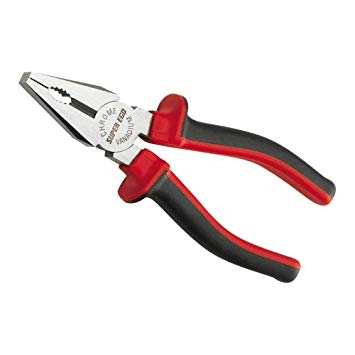

CONSEJOS
BASUREROS HECHOS CON MONITORES
Materiales
 De 1-4 monitores
De 1-4 monitores Soporte o pedestal hecho de fierro
Soporte o pedestal hecho de fierro Desarmador
Desarmador- Alicate o palanca
 Pintura a elección
Pintura a elección
Instrucciones
- Con el desarmador sacaremos los tornillos y con el alicate o la palanca se extraeran las partes trabadas(pero antes , hacer inspeccionar el monitor con un experto por precaución)
- Una vez que el monitor este completamente vacio , con la pintura que elegimos podremos pintarlo
- Despues pedimos la ayuda de algún cerrajero para que nos ayude a hacer el soporte en donde se colocara el monitor
- Y para finalizarlo acomodaremos los basureros.